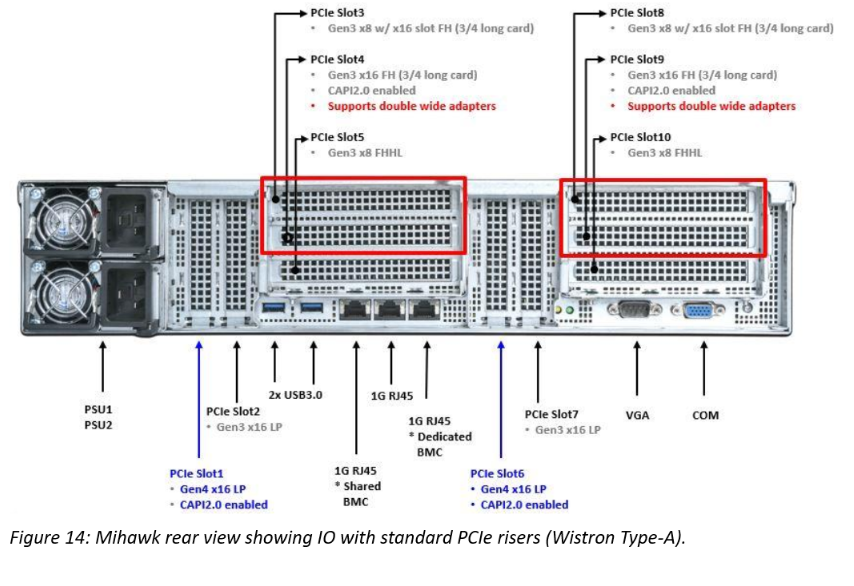
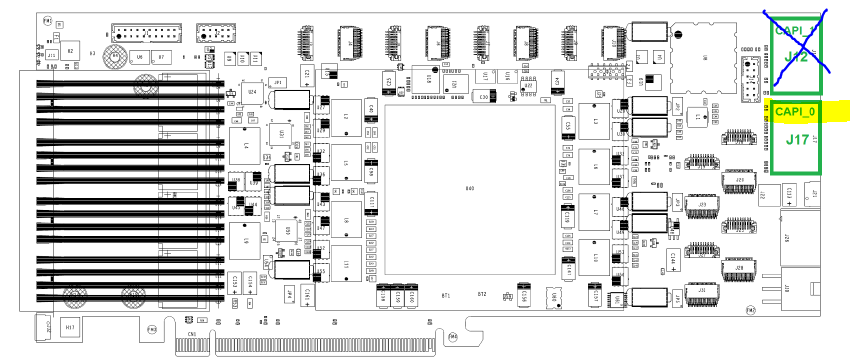

Application Note : OpenCAPI Quickstart Installing an OC-AD9H7 on IC922
OpenCAPI QuickStart OC-AD9H7 on IC922
By IBM Systems Group January 2021
Authors : OpenCAPI Support Team - Montpellier, FRANCE
Foreword
We will use SNAP word from time to time when mentionning the framework used with the previous versions of CAPI1.0 & CAPI2.0 technologies.
Since OpenCAPI (sometimes called CAPI3.0) is the 3rd generation of CAPI, some former SNAP names can be found. Most of them have been changed though (eg snap_maint became oc_maint).
The supplier reference is ADM-PCIE-9H7, we will use OC-AD9H7 in OC-ACCEL.
IC922 Hardware Setup
Unlike CAPI2.0, OpenCAPI (OC) doesn’t use PCI links, however, the card requires PCIe power supply and mechanical socket to work. An OC card can thus be theoretically installed in any PCIe socket. As the OC card can also be used in CAPI2 mode, Figure 1 indicates the slots where is can be placed for CAPI2/OpenCAPI dual usage.
Note that since OC-AD9H7 is 3/4 height it can only be placed in slots 4 and 9 using:
-
either a special Wistron riser
-
or a mechanically modified original riser.
NOTES
OC-AD9H7 is not yet directly orderable with an IC922. Specific risers need to be used to host the card.

Figure 1. Rear view of a IC922 system with PCIe CAPI enabled slots indicated
Please check details at:
https://www.ibm.com/support/knowledgecenter/en/9183-22X/p9iaf/p9iaf_pcie_slot_details.htm
OC-AD9H7 board Setup
The OC-AD9H7 has an octuple DIP switch SW1, located on the rear side of the board. Check that all switches are configured to default settings (all "OFF"), but SW1-6 at "ON". We don’t use these VPD data in SNAP/OC.
At the time of writing, only one OpenCAPI link can be configured with oc-accel. So please only connect CAPI_0 connector only.

Information come from Alphadata web site:
- https://www.alpha-data.com/dcp/products.php?product=adm-pcie-9h7
- https://www.alpha-data.com/pdfs/adm-pcie-9h7%20user%20manual_v1_3.pdf
Setup tools on the POWER server environment
A general procedure is available here
Check that the cards are recognized as accelerators
Check that the cards are recognized by the Firmware and the OS
lspci|grep accel
0006:00:00.0 Processing accelerators: IBM Device 062b
0006:00:00.1 Processing accelerators: IBM Device 062b
In this example, for this card, physical port is 0 and virtual port is 6. If no card is found with this command, then your OC-9H7 card may not have a OpenCAPI image in it, or your firmware is too old.
Here is an example of 2 cards used in a P9 server one being recognized as CAPI2 the other as OC :
lspci|grep acc
0006:00:00.0 Processing accelerators: IBM Device 062b #OC
0006:00:00.1 Processing accelerators: IBM Device 062b
0008:00:00.0 Processing accelerators: IBM Device 0632 (rev 01) #CAPI2
0030:01:00.0 Processing accelerators: IBM Device 0477 (rev 02)
First programming of a brand new OC-9H7 card (no CAPI image was ever installed)
There are several ways to program a OC-AD9H7 card. If no CAPI image was ever installed on this board, then you’ll need to follow these following instructions to set it once. Then you’ll be able to go faster using the next paragraph.
A basic test image for the OC-9H7 card’s FPGA can be obtained from IBM Box. Programming this image onto the card will require Xilinx Vivado version 2018.1 or newer and a usb cable. To do so, access the device from Vivado’s hardware manager and follow these steps:
Right click on the "xcvu37p_0" entry in the device list and select "add configuration memory device".
Select "mt25qu01g-spi-x1_x2_x4_x8" from the list of config mem devices.
When prompted, choose to program the config mem device.
In the subsequent menu, select the two .mcs files, followed by the two optional .prm files.
The programming should complete in a few minutes. Note that the card needs to be power cycled (i.e. by rebooting the system) before the new image will take effect. On some servers the fast reboot service is operational, a complete power cycle is necessary to make sure the card powers off.
Standard programming of an OC-9H7 card (OC image already in it)
Images for the OC-AD9H7 card’s FPGA will be created from the OC-ACCEL environment and will be placed in
~/oc-accel/hardware/build/Images
Once successfully synthesized. Then using the FPGA Image loader, you will program and reset the FPGA with your binary files using the following command:
sudo oc-flash-script oc_my_user_image.bin
Depending on the format of the FPGA board Flash devices, you may need 1or 2 binary files. OC-AD9H7 card needs 2 binary files noted as primary and secondary. You will so call the loader with the 2 files in the following order:
sudo oc-flash-script oc_my_user_image_primary.bin oc_my_user_image_secondary.bin
Note
At the time of writing oc-utils doesn't support online programming of OC-AD9H7 yet.
JTAG programming is required.
Running the Test Image if card has been already programmed with a OC image
From the oc-accel directory, compile once the software and applications
cd oc-accel
git pull # in case you already cloned earlier and want to stay up to date
make software apps
The default test which has been compiled in the Box’s image is a hls_hbm_memcopy1024 example.
oc_find_card -v -A ALL #This should return the card position
OC-AD9H7 card has been detected in card position: 4
...
then let OC-ACCEL framework discover the cards and actions with the oc_maint command.
Mention the card slot number if different from 0 using -C option.
This command needs to be run almost once after a reset and will return the action stated here as “HLS HBM Memcopy” (1024b)"
~/oc-accel/software/tools/oc_maint -v [-C4]
You can now:
- Either run the memcopy program doing any transfer you want.
You will get the explanations on how to use this example by typing
~/oc-accel/actions/hls_hbm_memcopy_1024/sw/snap_hbm_memcopy
- or run automatic test of hls_hbm_memcopy_1024 using
~/oc-accel/actions/hls_hbm_memcopy_1024/tests/hw_throughput_test.sh -d INCR
which will give you the bandwidth measured between FPGA, host memory and on-board for different file size exchanged.